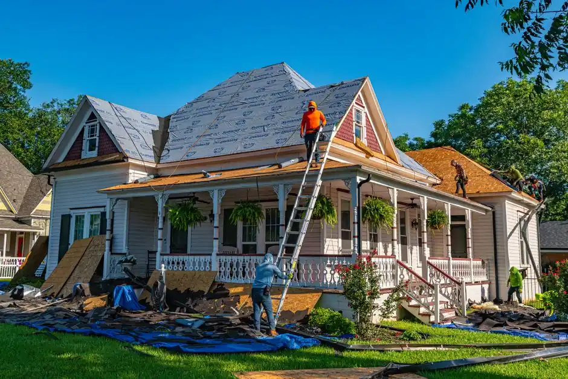

The Cost of Roof Replacement in McAllen: Full Breakdown
Explore the costs associated with roof replacement in McAllen, including factors that influence pricing and what to expect during the process.

The cost of roof replacement in McAllen typically ranges from $5,000 to $15,000, depending on various factors. Homeowners should understand these costs to make informed decisions about their roofing needs.
In this article, we will break down the costs associated with roof replacement, explore the factors that influence these costs, and provide insights into what to expect during the replacement process.
What is the cost of roof replacement?
Roof replacement is the process of removing an existing roof and installing a new one. In McAllen, the average cost for roof replacement varies significantly based on materials, labor, and the complexity of the job.
Factors influencing roof replacement costs in McAllen
Several factors can affect the overall cost of roof replacement in McAllen:
- Roof Size: Larger roofs require more materials and labor, increasing costs.
- Material Type: Different roofing materials come with varying price points. For example, asphalt shingles are typically less expensive than metal or tile roofs.
- Labor Costs: Local labor rates can impact the total cost. In McAllen, rates are generally competitive.
- Roof Complexity: Roofs with multiple slopes, valleys, or features may require more labor and time, affecting costs.
- Removal of Old Roof: If the old roof needs to be removed, this can add to labor costs.
Average costs for different roofing materials
Understanding the costs associated with various roofing materials can help you budget effectively. Here are some average costs for common roofing materials in 2026:
- Asphalt Shingles: $3,000 - $8,000
- Metal Roofing: $5,000 - $12,000
- Tile Roofing: $7,000 - $15,000
- Wood Shakes: $6,000 - $14,000
These prices reflect typical costs for materials and installation, but actual prices may vary based on specific circumstances.
What to expect during the roof replacement process
When you decide to replace your roof, several steps are involved:
- Initial Inspection: A professional will assess your roof's condition to determine the extent of the replacement needed.
- Material Selection: You will choose the roofing materials based on your budget and preferences.
- Scheduling: Once materials are selected, a timeline for the replacement will be established.
- Installation: The old roof is removed, and the new roof is installed. This process typically takes 1-3 days, depending on the roof size and complexity.
- Final Inspection: After installation, a final inspection ensures everything meets local building codes and standards.
Common mistakes when budgeting for roof replacement
Many homeowners make budgeting mistakes when planning for roof replacement. Here are some common pitfalls to avoid:
- Underestimating Costs: Failing to account for all materials and labor can lead to unexpected expenses.
- Ignoring Warranties: Not considering warranties for materials can result in higher long-term costs if issues arise.
- Neglecting Permits: Skipping necessary permits can lead to fines and additional costs later.
When to call a professional for roof replacement
If you're considering roof replacement, it's essential to consult with a professional. Select Your Roof offers expert assessments and can guide you through the entire process, ensuring you receive the best service possible.
Frequently Asked Questions
How much does roof replacement cost in McAllen? The average cost ranges from $5,000 to $15,000, depending on materials and roof size.
What factors affect roof replacement costs? Key factors include roof size, material type, labor costs, complexity, and the need for old roof removal.
How long does the roof replacement process take? Typically, the installation takes 1-3 days, depending on the roof's size and complexity.
Do I need a permit for roof replacement in McAllen? Yes, permits are typically required for roof replacements to ensure compliance with local building codes.
What type of roofing material is best for my home? The best material depends on your budget, aesthetic preferences, and the local climate conditions.